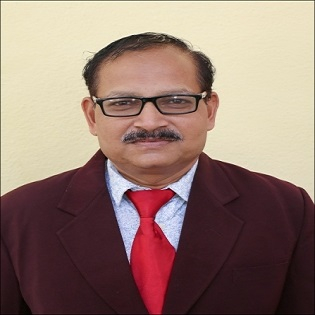

Designation : Associate Professor
Department: ECE
Date of joning : 01/09/1999
Qualifications :
UG:B.E.Industrial
Electronics(First Class)
PG:M.E.Electronics(First Class)
Ph.D: Pursuing
Total Experience :
Teaching : 24 Years
Industry : 1 Year
ĹHere is the summary of Mr. Namdeo Dada Kapale's profile in paragraph form: Mr. Namdeo Dada Kapale serves as an Assistant Professor in the Department of Electronics and Computer Engineering at Sanjivani College of Engineering, Kopargaon, having joined the institution on September 1, 1999. He holds a B.E. in Industrial Electronics from SGBU Amravati (1994) and an M.E. in Electronics with a Computer Specialization from Shivaji University, Kolhapur (2007), while currently pursuing his Ph.D. at Savitribai Phule Pune University. With 24 years of teaching experience and 1 year in industry, Mr. Kapale focuses his research on areas such as biometric person identification, image fusion, IoT systems, and smart automation. His contributions include co-authoring publications like "Multimodal Image Fusion for Feature Extraction based on Biometric Person Identification," mentoring student innovations like wireless water level controllers, coordinating the Texas Instruments Center of Excellence, and maintaining active professional memberships in bodies including IETE, ISTE, IE(I), and AICTSD.